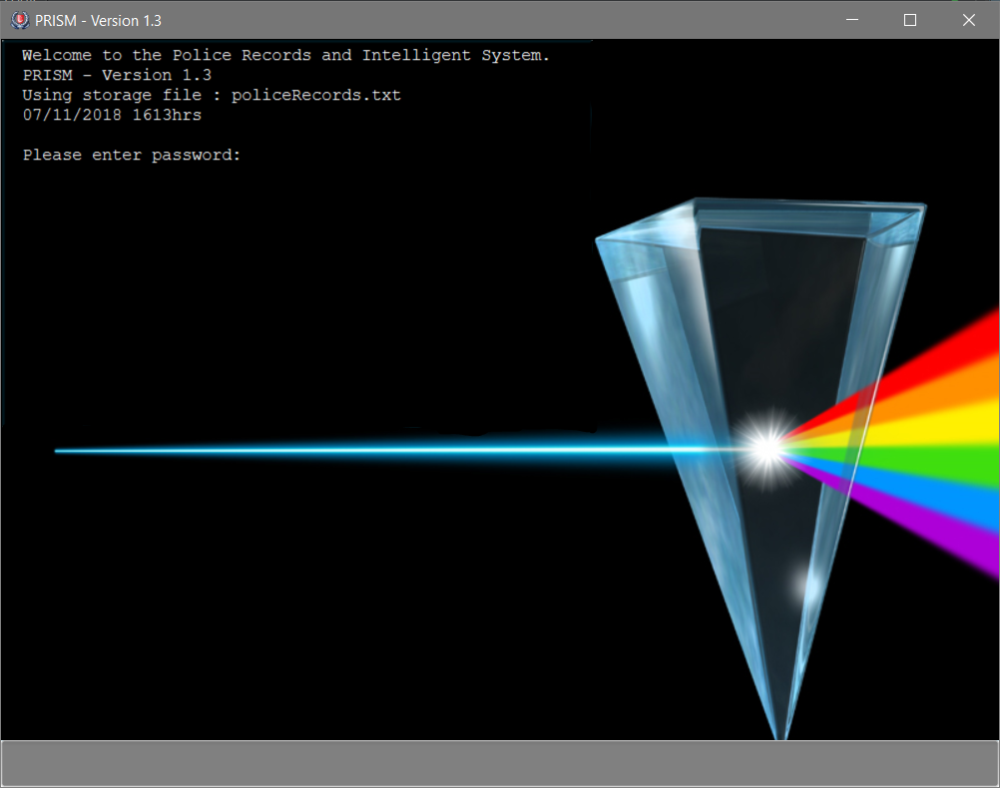

By: Team F10-3 Since: `Aug 2018'
- 1. Introduction
- 2. Quick Start
- 3. Features
- 3.1. Viewing help :
help(HQP & PO) - 3.2. Display date and time :
time(HQP & PO) - 3.3. Adding a person:
add(HQP only) - 3.4. Editing a person :
edit(HQP only) - 3.5. Display a list of all persons :
list(HQP & PO) - 3.6. Find a person by NRIC :
find(HQP & PO) - 3.7. Get screening history of a person:
check(HQP) - 3.8. Get status of POs:
checkstatus(HQP & PO) - 3.9. Update status of PO:
updatestatus(HQP only) - 3.10. Deleting a person :
delete(HQP only) - 3.11. Clear records :
clear(HQP only) - 3.12. Requesting for assistance :
rb(HQP & PO) - 3.13. Dispatch assistance for requester:
dispatch(HQP only) - 3.14. Lock System :
lock(HQP & PO) - 3.15. Update Password :
update password(HQP) - 3.16. Check notifications:
showunread(HQP & PO) - 3.17. Read message :
read(HQP & PO) - 3.18. Clear inbox:
clearinbox - 3.19. Shutdown program :
shutdown(HQP & PO) - 3.20. AutoCorrect feature
- 3.1. Viewing help :
- 4. Commands List
1. Introduction
The police database is for police officers(PO) and headquarter personnel(HQP). Both groups will have varying access and authorization levels to this database. POs would be able to read from the database after screening someone while on patrol and choose his course of action base on the status/threat level of subject. HQP would have the added functions of adding and removing people from the database. Refer to quick start to get started
2. Quick Start
-
Ensure that you have Java Version 9 installed on your device.
-
Download the latest version of PRISM here.
-
Copy the jar file to a preferred folder (an empty folder).
-
Double-click the file to start the app. The user interface should appear in a few seconds.
-
NOTE: DO NOT edit the text files that comes with the PRISM jar file.
-
The text box is located at the bottom of the screen, and is grey in colour
-
Throughout the list of features, each command will indicate if its available for HQP, PO or both
-
-
Type the password in the text box below and press Enter to enter system as a specific user.
-
Defaults passwords for the users (Passwords are Case Sensitive):
-
HQP: papa123
-
PO1: popo1
-
PO2: popo2
-
PO3: popo3
-
PO4: popo4
-
PO5: popo5
-
-
Type a command in the same text box and press Enter to excecute it.
-
To display the full list of commands and a summary of their functions in the application, type 'help' and press Enter.
-
Refer to Section 3, “Features” for details of each command.
3. Features
Command Format
-
Words in
UPPER_CASEare the parameters to be supplied by the user e.g. inadd n/NAME,NAMEis a parameter which can be used asadd n/John Doe -
Items in the
WANTEDFORparameter must be given ifSTATUSis "wanted" -
Items in square brackets are optional e.g
n/NAME [p/POSTALCODE] [s/STATUS]can be used asn/John Doe p/510246 s/xcorn/John Doe s/xc -
Items with
… after them can be used multiple times including zero times e.g.o/OFFENSE…can be used aso/theft,o/riot o/drugsetc
3.1. Viewing help : help (HQP & PO)
Lists all the features in a user friendly format for users and how to use them.
|
Format: 'help'
3.3. Adding a person: add (HQP only)
Adds a criminal to the database.
Format: 'add NAME n/NRIC d/YEAROFBIRTH p/POSTALCODE s/STATUS w/WANTEDFOR [o/PASTOFFENSES]'
Examples:
-
add John Doe n/f1234567p d/1996 p/510246 s/xc w/none o/theft o/drugs"
-
Displays a message stating the new person being added
|
| A person can have 0 or more past offenses |
3.4. Editing a person : edit (HQP only)
Edit specified parameter(s) of an existing person in the Police Records - only by HQP.
Format: 'edit n/NRIC p/[POSTAL_CODE] s/[STATUS] w/[WANTED_FOR] o/[PAST_OFFENCES]'
|
Examples:
-
edit g1952866Q p/510246
-
Edits the postal code of the person with the specified NRIC to be 510246
3.5. Display a list of all persons : list (HQP & PO)
Shows a list of every person in the Police Records
Format: 'list'
Examples:
-
list
-
Displays list of all persons
3.6. Find a person by NRIC : find (HQP & PO)
Finds a person in the Police Records by the specified NRIC
Format: 'find NRIC'
Examples:
-
find s1234567a
-
Returns person with 's1234567a'
|
3.7. Get screening history of a person: check (HQP)
Displays all the times a person was screened in the form of timestamps (using 'find' command) - Only by HQP
Format: 'check s1234567a'
-
Returns an indexed list of timestamps for specified person, as well as corresponding PO ID nuber
Examples:
-
check s1234567a
-
Shows an indexed list of timestamps for when person with s1234567a was screened by any POs
3.8. Get status of POs: checkstatus (HQP & PO)
Shows all POs and their current engagement statuses
Format: 'checkstatus'
3.9. Update status of PO: updatestatus (HQP only)
Updates the PO so that it is not engaged anymore
Format: 'updatestatus PO(ID)'
Examples:
-
updatestatus po2
-
po2 is now free for dispatch
3.10. Deleting a person : delete (HQP only)
Deletes the specified person from the database.
Format: 'delete NRIC'
-
Deletes the person with the specifies NRIC.
Examples:
-
delete g1952866q
-
Deletes the person with the specified NRIC from the records.
3.11. Clear records : clear (HQP only)
Clears all records of people in the Police Records.
Format: 'clear'
Example:
-
clear
-
Records will now be empty
3.12. Requesting for assistance : rb (HQP & PO)
Generates GPS coordinates of current location with current case and sends it to HQP. HQP would receive message in inbox.
Format: 'rb OFFENSE'
Examples:
-
rb gun
-
Sends a set of GPS coordinates, Current Case and Google Maps URL location to HQP.
3.13. Dispatch assistance for requester: dispatch (HQP only)
Generates message to dispatch an officer to backup a requesting officer Message would be sent to requester & backup officer which includes ETA(Real Time) & Location (Google Maps URL).
Format: 'dispatch (BACKUP OFFICER) (OFFENSE) (REQUESTER OFFICER)'
-
dispatch po1 gun po3
-
Sends a set of GPS coordinates, current case, ETA and Google Maps URL location of requester to backup officer and vice-versa.
3.14. Lock System : lock (HQP & PO)
Locks the system and unlocks with password input
Format: 'lock'
Examples:
-
lock
-
Any user must enter their respective password to unlock
3.15. Update Password : update password (HQP)
Updates password of any existing user - only HQP can change the user’s password
Format: 'update password'
Examples:
-
update password
-
Please enter a password to change
-
User then has to enter existing password and new alphanumeric password of minimum length 5
3.16. Check notifications: showunread (HQP & PO)
For HQPs: Check inbox to see a list of dispatch requests made by POs, and are sorted based on severity first, and then time stamp. For POs: Check inbox to see who is responding to request for backup/ambulance/fire truck or to see if have any dispatch orders
Format: 'showunread'
Examples (as a HQP):
-
'showunread'
-
Shows a list of dispatch requests (sorted by severity then timestamp) made by POs on the ground:
Examples (as a PO): * 'showunread' * Shows any dispatch messages by HQ or response for backup if any
3.17. Read message : read(HQP & PO)
Updates the status of unread messages to read. Command to be used after showunread command
Format: 'read index'
Examples: * read 1
3.18. Clear inbox: clearinbox
Clears the text file containing all the messages (both read and unread) for the user.
Format: 'clearinbox'
3.19. Shutdown program : shutdown (HQP & PO)
Shutdown the system
Format: 'shutdown'
Examples: * shutdown * Police Records shuts down
3.20. AutoCorrect feature
AutoCorrect feature predicts expected input when the user enters invalid input. Currently all commands are covered by the feature.
4. Commands List
-
Help : 'help'
-
Show time : 'time'
-
Add : 'add n/NAME n/NRIC d/YEAR_OF_BIRTH p/POSTAL_CODE s/STATUS w/WANTED_FOR o/PAST OFFENCES…'
E.g. add John Doe n/s1234567a d/1996 p/510246 s/xc w/none o/theft o/drugs E.g. add Bob n/g1234567a d/1996 p/111111 s/clear w/none
-
Edit : 'edit NRIC n/[NAME] p/[POSTAL_CODE] s/[STATUS] w/WANTED_FOR o/PAST_OFFENCES'
E.g. edit g1952866q p/510246
-
List : 'list'
-
Find : 'find NRIC'
E.g. find s1234567a
-
Check : 'check NRIC'
E.g. check s1234567a
-
Get status of POs : 'checkstatus'
-
Update status of PO : 'updatestatus'
E.g updatestatus po2
-
Delete : 'delete NRIC'
E.g. delete g1952866q
-
Clear : 'clear'
-
Request for backup : 'RB'
-
Dispatch : 'dispatch PO(ID)'
E.g. dispatch PO2
-
Lock : 'lock'
-
Update Password : 'update password'
-
Check notifications : 'showunread'
-
Read message : 'read index'
-
Clear Inbox : 'clearinbox'
E.g read 1
-
Shutdown : 'shutdown'